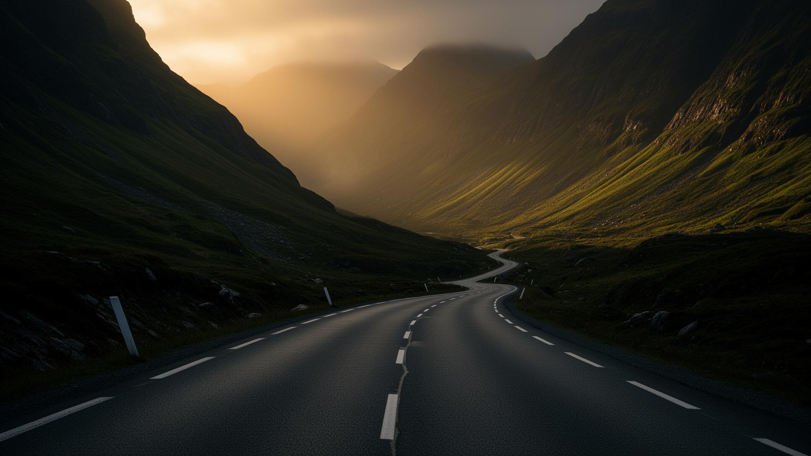
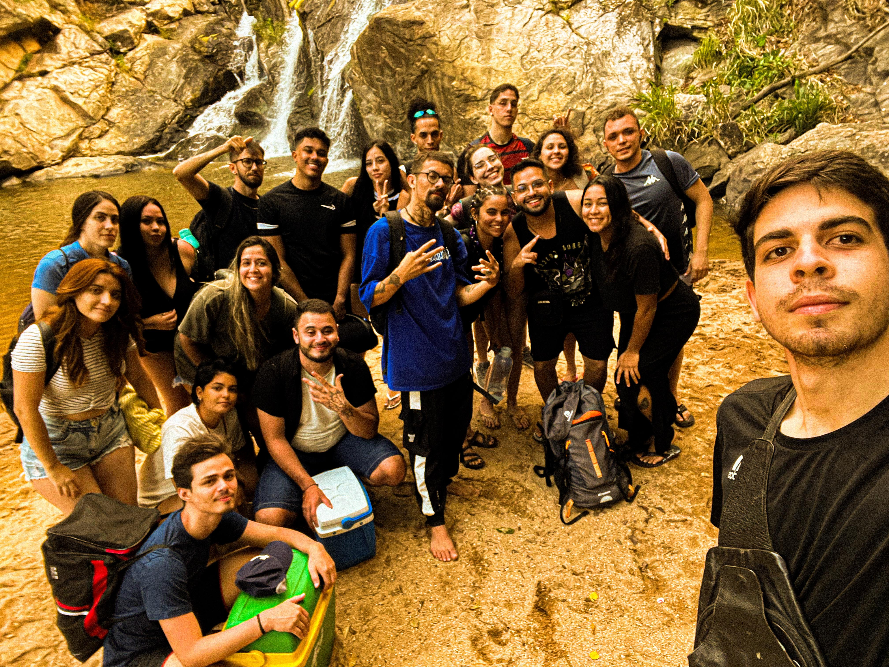
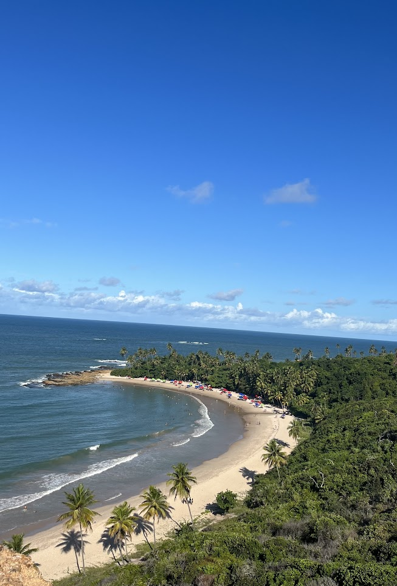
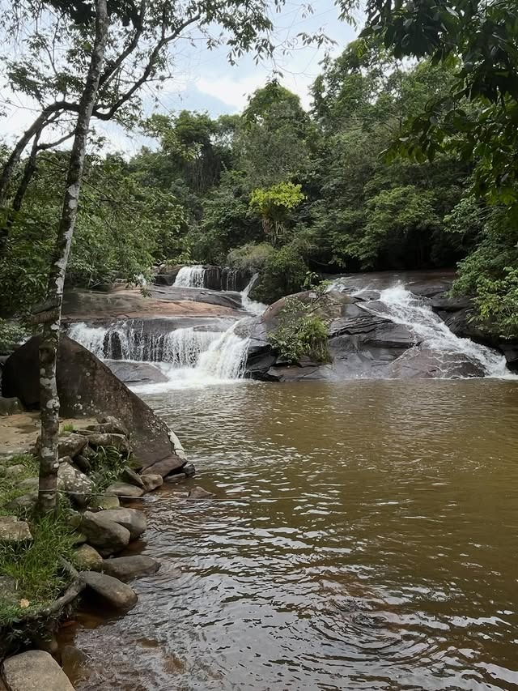
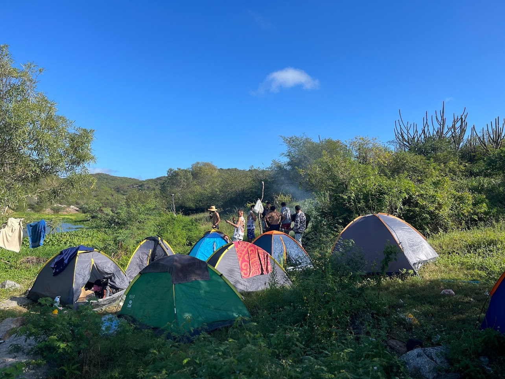
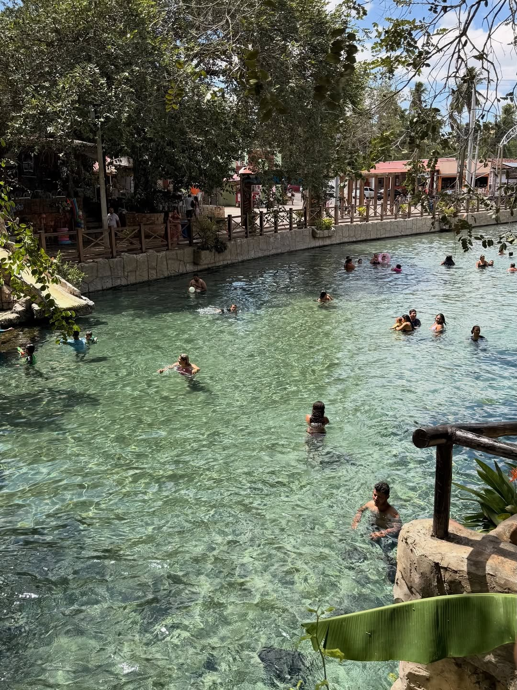

Vagas abertas
Capítulo 03 · Setembro 2026
Pico do Jabre
Maturéia - PB
R$ 150,00
Reservar via WhatsApp
No Destination
OVERTRIP é uma agência de experiências e uma comunidade para quem acredita que a melhor parte da viagem começa muito antes do destino.
OVERTRIP Expeditions
Próximo embarque aberto
Capítulo 03 · Setembro 2026
Maturéia - PB
R$ 150,00
Reservar via WhatsApp
Capítulo 04 · Outubro 2026
Buíque - PE
R$ 180,00
Reservar via WhatsApp
Capítulo 05 · Outubro 2026
Conde - PB
R$ 140,00
Reservar via WhatsApp
Capítulo 06 · Novembro 2026 · Expedição especial
Buriticupu - MA
R$ 450,00
Entrar na lista de espera
Sobre a OVERTRIP
A OVERTRIP começou em 2023 entre amigos que decidiram viajar de um jeito diferente. Pouco roteiro. Muita presença.
O destino nunca foi o ponto. O que importava era o que acontecia no caminho.
Hoje, a OVERTRIP reúne pessoas que acreditam que viajar também é conhecer gente, criar histórias e viver experiências que continuam depois da volta.
Linha do tempo
Um grupo de amigos troca o roteiro óbvio por uma viagem sem destino fixo. Nasce a ideia que viraria OVERTRIP.
Sai do papel a primeira expedição organizada, com curadoria, logística e identidade próprias.
Quem viaja uma vez, volta. Surge o núcleo do que hoje chamamos de Tribo OVERTRIP.
A OVERTRIP cruza a fronteira do estado e leva o "No Destination" para novos destinos.
O universo da marca ganha um novo capítulo: produtos para viver o Move Different fora da estrada.
Universo OVERTRIP
A OVERTRIP reúne experiências, comunidade e produtos para quem acredita que viajar também é um estilo de vida.
Experiências autorais com logística, curadoria e presença real.
A comunidade de quem embarca junto, troca rota, cria história e continua conectado depois da trip.
Produtos para levar a identidade da marca para fora da estrada: camisetas, bonés, garrafas e acessórios.
Como funciona?
Rota, logística, paradas e ritmo pensados para transformar uma viagem simples em memória coletiva.
Grupos menores pra preservar a vibe. É excursão, mas também é curadoria, encontro e história pra levar.
Aproveite a viagem, conheça pessoas, descubra lugares e viva uma experiência que continua depois da volta.
Galeria - Memória OVERTRIP

Capítulo 02
Bate-papo, vista alta e gente que vira família.

Capítulo 01
Cachoeira, trilha e silêncio que reorganiza a mente.

Camping no Rio do Feijão - Barra de Santana - PB
Quando a trip continua mesmo com o motor desligado.

Maio 2026
Águas claras e a resenha que quase atrasou a volta.
Histórias de quem já embarcou.
Relatos de quem já embarcou e entendeu que a experiência vai além do destino.
Achei que ia ser só um bate-volta, mas a resenha no caminho virou parte da experiência.
Foi organizado sem ficar engessado. Tinha rota, mas também tinha tempo pra curtir o lugar.
Fui sem conhecer quase ninguém e voltei com a sensação de ter participado de algo leve.
FAQ rápido
As perguntas que mais aparecem no nosso WhatsApp. Se a sua não está aí, é só chamar.
Tirar dúvida no WhatsAppPode sim. As experiências são pensadas para acolher quem chega sozinho(a), em casal ou com amigos. Antes do embarque, a organização aproxima o grupo e passa as informações principais.
Quero entender melhorA reserva é feita com 50% do valor da experiência. O restante deve ser quitado até 48h antes do embarque. Aceitamos PIX e cartão; pagamentos no cartão podem ter acréscimo de taxas/juros da operadora.
Reservar agoraInclui transporte, organização e curadoria da experiência. Alimentação, entradas ou itens extras são informados antes da reserva.
Ver detalhes da próximaCada expedição tem um nível de intensidade. Antes da reserva, informamos se a experiência é leve, moderada ou exige mais preparo físico.
Falar com a organizaçãoA reserva movimenta organização, logística e parceiros. Por isso, a política de desistência é informada antes do pagamento e considera a proximidade do embarque e os custos já assumidos. Situações excepcionais, como problemas de saúde comprovados, são analisadas individualmente.
Entender a políticaEmbarque
Escolha sua próxima experiência e viaje com pessoas que acreditam que a estrada também faz parte da viagem.